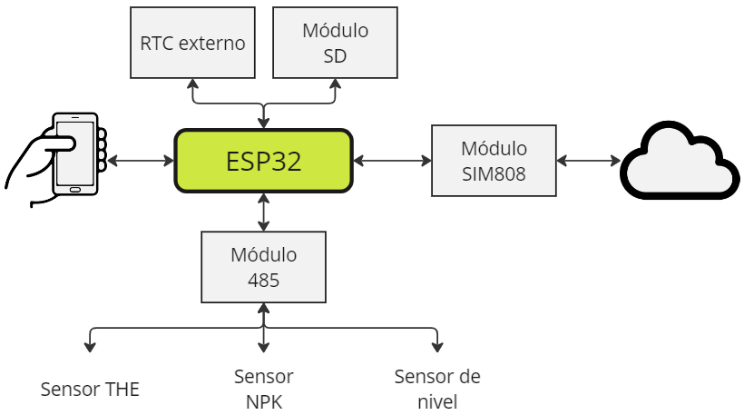

1.- Descripción del equipo
1.1.- Diagrama de bloques
1.2.- Componentes
Tarjeta de desarrollo ESP32 DOIT DEVKIT V1 (versión de 30 pines);
Módulo conversor RS-485 TTL MAX485 transceiver (cambiar integrado para que funcione con 3,3V en lugar de 5V);
Módulo lector de tarjetas microSD (versión con zócalo para poner la microSD directamente, sin necesidad de adaptador);
Módulo DS3231;
Módulo relé doble, de 3.3V;
2 sensores de Stevens;
Fuentes de 12V, 5V y de 3,3V;
1 resistencia para pull-down de 10kOhm aproximadamente;
1 pulsador (no interruptor).
1.3.- Funcionamiento
1.3.1.- Mediciones automáticas
Cuando el equipo está configurado, realiza mediciones automáticas dependiendo del modo introducido por el usuario. Los modos de funcionamiento son 2: el 12 y el normal.
Modo |
Intervalo de medición (hs) |
Intervalo de envío (hs) |
Hora de envío |
|---|---|---|---|
12 |
1 |
12 |
0:00 y 12:00 |
Normal |
24 |
24 |
12:00 |
El ESP32 permanece dormido o en deep sleep mode y se despierta para realizar mediciones. Sigue los siguientes pasos:
Manda a medir a los sensores que tiene configurados.
Con esa respuesta, arma los paquetes de mediciones.
Se conecta a internet.
Se manda el paquete al servidor.
Si hay algún problema con el envío, el paquete se guarda en una memoria SD para enviar en un futuro.
Si no hay ningún problema y el servidor contestó bien, se chequea para ver si hay mediciones guardadas en la memoria SD y las envía.
También chequea si hay alguna configuración pendiente y la envía si ese es el caso.
El ESP32 vuelve a dormir.
1.3.2.- Manejo desde la app
Tocando el pulsador, se despierta el ESP32 y éste genera a su vez una red WiFi para que el celular se coencte. Mediante la app, el usuario puede configurar el equipo, hacer mediciones manuales, descargar el historial de mediciones guardadas, entre otras cosas.
Al cabo de 10 minutos, el equipo vuelve a ponerse en modo deep sleep. Si no se alcanzó a realizar las operaciones previstas, se puede volver a tocar el pulsador para crear la red de nuevo.